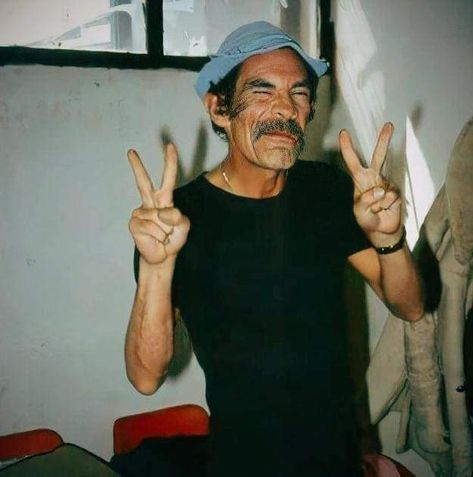

Chaves (ou El Chavo del 8 no original em espanhol)
é um dos programas de televisão mais amados e
influentes da América Latina e do mundo.
Criado e protagonizado pelo genial Roberto Gómez Bolaños,
o seriado estreou no México em 1971 e rapidamente conquistou
uma enorme audiência, não apenas no México, mas em toda a
América Latina e outros países, incluindo o Brasil.
Ao longo dos anos, Chaves se transformou em um verdadeiro
ícone da cultura popular, com suas histórias simples,
personagens cativantes e um humor que atravessa gerações.
"Chaves" se passa em uma vila humilde e gira em torno das aventuras e
mal-entendidos de um garoto pobre e inocente, conhecido como Chaves,
interpretado pelo próprio Roberto Gómez Bolaños.
O personagem mora em um barril, embora isso seja mais um simbolismo,
pois ele realmente vive em um dos apartamentos da vila.
A trama se desenrola com interações entre Chaves e os outros moradores da vila,
como Seu Madruga, Dona Florinda, Quico, Chiquinha, Professor Girafales, entre outros.